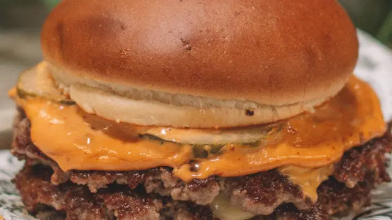

Smash Burger

En los últimos tiempos, ha irrumpido con fuerza en nuestro país un término
que viene directamente de Estados Unidos: las smash burgers.
Estas, como su propio nombre indica, son hamburguesas aplastadas, es
decir, durante el proceso de elaboración se prensa una bola de carne br
contra la plancha y de esta forma se consigue un disco, más fino, jugoso y
crujiente.
En este sentido, son varios los restaurantes que se han especializado en
este tipo de hamburguesas, pero lo que probablemente no sabes es que
también puedes disfrutarlas en tu casa.
Ingredientes
- 250 gr de carne de vacuno dividida en dos bolas
- Queso cheddar en lonchas
- Pepinillo en lonchas
- Cebolla
- Lechuga
- Tomate
- Pan de hamburguesa
- Mantequilla
- Sal
- Pimienta negra
Pasos:
- Prepara la carne dividiéndola en dos o más bolas en función del número de hamburguesas que quieras incluir en tu smash burger.
Salpimiéntalas generosamente.
- Prepara la guarnición, cortando la cebolla en juliana, la lechuga, el tomate y los pepinillos.
- En una sartén plana o plancha, coloca una nuez de mantequilla y tuesta los panes de hamburguesa sobre ella hasta que se doren.
Resérvalos junto a la guarnición.
- Coloca una de las bolas de carne picada sobre la sartén o plancha y aplástala enérgicamente con ayuda de una espátula.
Ten en cuenta que, mediante esta técnica y si el fuego está lo suficientemente alto, la carne se cocina rápidamente, por lo que en cuanto los bordes estén crujientes, dale la vuelta.
- Pon una loncha de queso sobre la hamburguesa para que se derrita y cocina no más de un minuto.
Retira y repite el proceso con el resto de bolas que hayas sacado de la carne.
- Monta tu smash burger, untando los panes con mayonesa u otra salsa que prefieres e incluye el resto de ingredientes al gusto.